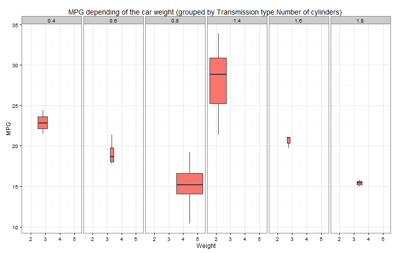

- Let's you know what you can expect from your car
- Just 3 simple parameters required
- Intuitive interface
Lena Stevanoska
Estimated value is calculated using the following formula
\(Y = \hat \beta_0 + \hat \beta_1 * X_1 + \hat \beta_2 * X_2 + \hat \beta_3 * X_3\)
The \(\hat \beta_k\) values are calculated using the linear regression model fitted through the mtcars dataset.
## Estimate Std. Error t value Pr(>|t|)
## (Intercept) 39.4179334 2.6414573 14.9227979 7.424998e-15
## factor(am)1 0.1764932 1.3044515 0.1353007 8.933421e-01
## wt -3.1251422 0.9108827 -3.4308942 1.885894e-03
## cyl -1.5102457 0.4222792 -3.5764148 1.291605e-03
The \(X_k\) values are the entered values:
